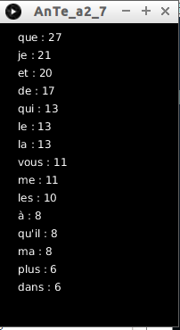
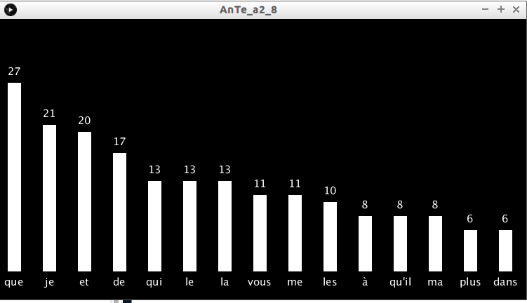

Toujours en travaillant sur le poème de Victor Hugo, nous allons maintenant chercher à séparer les mots afin de pouvoir compter chaque occurrence.
Dans un premier temps, nous allons former une chaîne de caractère qui contiendra l'ensemble du poème.
Saisissez, analysez et testez ce code
String[] lignes=loadStrings("hugo.txt");
String texte=join(lignes," ");
println(texte);
Créez un programme permettant d'obtenir ceci (pour vous aider : la méthode "textWidth" renvoie la longueur (en pixels) d'une chaîne de caractères, elle prend en paramètre une chaîne de caractère et retourne un "float").
Créez un programme permettant de séparer chaque mot du poème de Victor Hugo, vous devrez obtenir ceci :
Pour vous aider : il est sans doute judicieux d'utiliser la méthode "splitTokens" (voir l'activité suivante si nécessaire : .
Il nous reste plus qu'à compter le nombre d'occurrences d'un mot. Nous allons utiliser une structure de type "dictionnaire" (pour "réviser" la notion de "dictionnaire", voir ici) : la clé devra correspondre au mot et la valeur associée au nombre d'occurrences de ce mot.
Créez un programme permettant d'obtenir le "dictionnaire" (clé : mot, valeur : nombre d'occurrences). Voici une partie de ce que vous devriez obtenir en affichant ce dictionnaire dans la console Processing à l'aide d'un "println" :
IntDict size=418 { "Il": 5, "est": 3, "temps": 1, "que": 18, "je": 15, "me": 11, "repose": 1, "Je": 6, "suis": 2, "terrassé": 1, "par": 5, "le": 11, "sort": 2....
Comme vous le savez sans doute, Processing (et donc Java) est sensible à la casse (il fait la différence entre majuscule et minuscule), un "Il" n'est donc pas comptabilisé comme un "il".
Modifiez le programme créé dans le "À faire vous-même 2.4" pour que les mots soit exclusivement composé de minuscule (afin d'établir un comptage correct des mots).
Voici une partie de ce que vous devriez obtenir :
IntDict size=386 { "il": 5, "est": 3, "temps": 1, "que": 27, "je": 21, "me": 11, "repose": 1, "suis": 2, "terrassé": 1, "par": 5, "le": 13, "sort": 2...
Il serait sans doute plus judicieux de classer le dictionnaire afin d'avoir les mots avec le plus grand nombre d'occurrences en premier.
Modifiez le programme créé dans le "À faire vous-même 2.5" pour obtenir un dictionnaire classé (comme indiqué ci-dessus).
IntDict size=386 { "que": 27, "je": 21, "et": 20, "de": 17, "qui": 13, "le": 13, "la": 13, "vous": 11, "me": 11, "les": 10, "à": 8, "qu'il": 8, "ma": 8, "plus": 6, "dans": 6, "aux": 6, "voir": 5...
Comme vous pouvez le constater ci-dessus, Victor Hugo emploie très souvent le "je" dans son poème, cela a peut-être une signification ?
Nous pouvons maintenant améliorer la présentation des résultats :
Créez un programme permettant d'obtenir ceci :
Il est possible de créer un diagramme pour une meilleure lisibilité.
Créez un programme permettant d'obtenir ceci :
